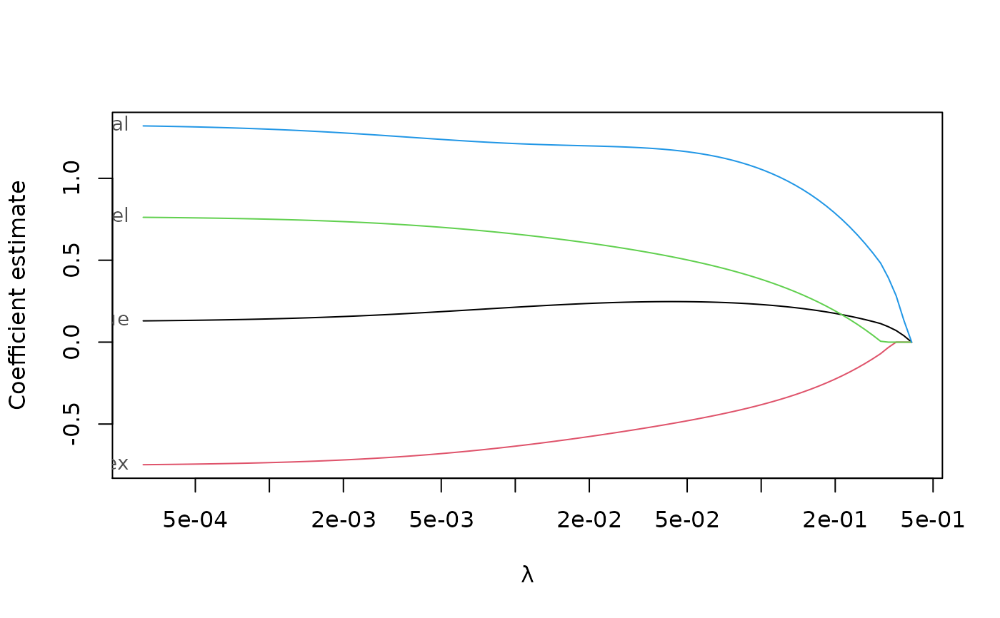
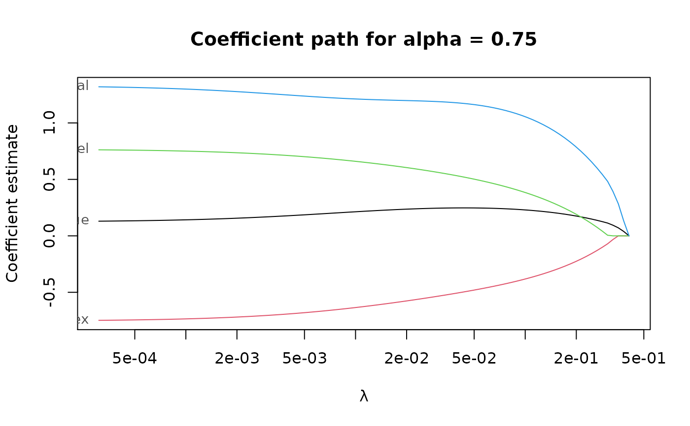
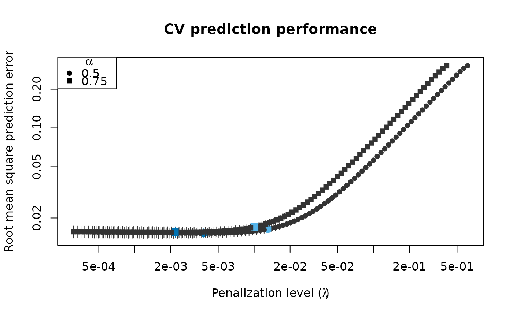

Perform (repeated) K-fold cross-validation for elnet().
elnet_cv( x, y, lambda, cv_k, cv_repl = 1, cv_metric = c("rmspe", "tau_size", "mape"), fit_all = TRUE, cl = NULL, ncores = deprecated(), ... )
| x |
|
|---|---|
| y | vector of response values of length |
| lambda | optional user-supplied sequence of penalization levels. If given and not |
| cv_k | number of folds per cross-validation. |
| cv_repl | number of cross-validation replications. |
| cv_metric | either a string specifying the performance metric to use, or a function to evaluate prediction errors in a single CV replication. If a function, it is called with a single numeric vector of prediction errors and must return a scalar number. |
| fit_all | If |
| cl | a parallel cluster. Can only be used if |
| ncores | deprecated and not used anymore. |
| ... | Arguments passed on to
|
a list with components:
lambdathe sequence of penalization levels.
cvresdata frame of average cross-validated performance.
cv_replicationsmatrix of cross-validated performance metrics, one column per replication.
Rows are in the same order as in cvres.
callthe original call.
estimatesthe estimates fitted on the full data. Same format as returned by elnet().
The built-in CV metrics are
"rmspe"Root mean squared prediction error (default).
"mape"Median absolute prediction error.
"tau_size"\(\tau\)-size of the prediction error, computed by tau_size().
elnet() for computing the LS-EN regularization path without cross-validation.
pense_cv() for cross-validation of S-estimates of regression with elastic net penalty.
coef.pense_cvfit() for extracting coefficient estimates.
plot.pense_cvfit() for plotting the CV performance or the regularization path.
Other functions for computing non-robust estimates:
elnet()
# Compute the LS-EN regularization path for Freeny's revenue data # (see ?freeny) data(freeny) x <- as.matrix(freeny[ , 2:5]) regpath <- elnet(x, freeny$y, alpha = 0.75) plot(regpath)# Extract the coefficients at a certain penalization level coef(regpath, lambda = regpath$lambda[5])#> (Intercept) lag.quarterly.revenue price.index #> 2.237517683 0.113172516 -0.070403973 #> income.level market.potential #> 0.005292233 0.482370668# What penalization level leads to good prediction performance? cv_results <- elnet_cv(x, freeny$y, alpha = 0.75, cv_repl = 10, cv_k = 4, cv_measure = 'tau') plot(cv_results, se_mult = 1)# Extract the coefficients at the penalization level with # smallest prediction error ... coef(cv_results)#> (Intercept) lag.quarterly.revenue price.index #> -9.9728656 0.1627509 -0.7114539 #> income.level market.potential #> 0.7288730 1.2678040# ... or at the penalization level with prediction error # statistically indistinguishable from the minimum. coef(cv_results, lambda = 'se')#> (Intercept) lag.quarterly.revenue price.index #> -9.6665436 0.2049037 -0.6505213 #> income.level market.potential #> 0.6740622 1.2187857